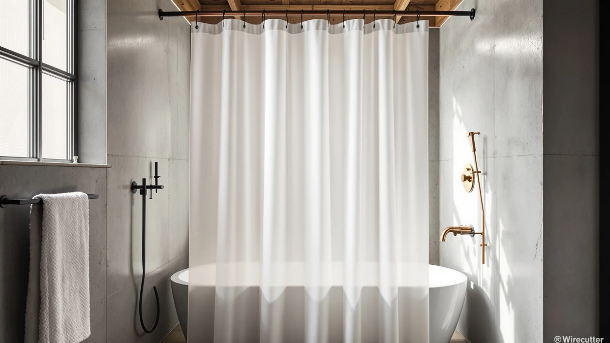

Things to Know Before You Buy
- Standard curtains and liners run 70 by 72 inches or 72 by 72 inches, sized for a typical 60-inch alcove tub.
- Extra-long sizes (78 or 84 inches) matter once your rod sits higher than 74 inches off the tub floor.
- Shower stalls without a tub usually need a narrower 54 by 78-inch curtain, not a standard tub size.
- Your liner should hang one to two inches shorter than your curtain so it stays tucked inside the tub.
- A curtain needs to span at least the full rod width, plus a few extra inches for fullness so it does not pull tight.
This shower curtain size guide exists because most people buy a replacement curtain in the exact size as the one they are tossing out, and that habit carries over whatever sizing mistake the old curtain had. A curtain that drags on the floor, gaps at the ends of the rod, or lets water past the tub edge usually traces back to one wrong measurement, not a defective product.
Manufacturers only make a handful of sizes, so your job is matching your rod width, tub length, and mounting height to the closest standard option rather than guessing at a store shelf. Once you know the four or five common dimensions and where each one applies, picking the right curtain and liner takes about five minutes with a tape measure.
Below you will find the standard sizes, how curtain and liner dimensions relate to each other, and the buying mistakes that cause bunching, gapping, or water escaping onto your bathroom floor.
What You Need to Know
Every shower curtain size guide starts with the same baseline number: 70 by 72 inches. That is the classic American size, built around a standard 60-inch alcove tub and a rod mounted about 72 inches off the floor. Retailers also sell a 72 by 72-inch version, which is close enough that most stalls treat the two as interchangeable.
Width matters more than height for most bathrooms because a 60-inch tub with a rod extending a few inches past each end needs roughly 70 inches of curtain to reach both walls without gapping. Add fullness so the fabric drapes instead of pulling flat, and 70 to 72 inches becomes the practical minimum, not a rounded-up convenience number.
Height becomes the variable once your ceiling runs taller than 8 feet or your rod mounts higher for a more open feel. A curtain cut for a 72-inch drop will stop several inches above the tub floor on a raised rod, which is exactly the gap that lets water spray past the curtain and onto tile or flooring. You want the hem to clear the tub floor without floating above it.
Stall showers without a tub change the math entirely. A stand-up stall usually measures 36 to 40 inches wide, so a 54 by 78-inch stall curtain fits the opening without the excess fabric a tub-width curtain would leave bunched at the corners.
Types and Categories
A shower curtain size guide only helps if you know which category your bathroom falls into first. Standard tub-and-shower combos take the 70 or 72-inch square curtains covered above, and that single size range covers most rental apartments and builder-grade bathrooms in the US.
Extra-long curtains, typically 78 or 84 inches, solve the gap problem in bathrooms with tall ceilings or rods mounted near the ceiling for a more spa-like look. You lose nothing by sizing up here: an extra-long curtain still works on a standard rod, it hangs with a bit more fabric pooling near the floor if your ceiling turns out lower than expected.
Extra-wide curtains, often 96 to 108 inches, exist for clawfoot tubs, wraparound rods, and double-width showers where one curtain needs to cover both sides of an oval or curved rod. Buying a standard-width curtain for one of these setups leaves visible gaps no matter how you adjust the rod.
Stall curtains at 54 by 78 inches serve stand-up showers, and liners come in nearly every one of these sizes separately from the decorative curtain. Treating the liner as its own category, rather than assuming it should match your curtain exactly, is the detail most people skip.
How to Choose
Start with your rod, not the curtain aisle. Measure the straight-line width between the two walls or brackets your rod spans, then add 12 to 16 inches of fullness so the curtain drapes in soft folds instead of stretching flat across the opening. A 60-inch rod calls for at least a 70-inch curtain for this reason, and it is why the 70-by-72 standard exists in the first place.
Next, measure height from the rod down to the tub floor or shower base. Subtract nothing for a liner and about 1 to 2 inches for the outer fabric curtain, since you want the curtain to end above the floor rather than pooling in standing water. If that measurement lands past 72 inches, move up to an extra-long size instead of hoping a standard curtain stretches.
Check your rod type before you finalize a width. A curved or tension rod that bows outward from the wall effectively increases the distance the curtain has to travel, so a curved rod rated for a 60-inch tub can still need the same 70 to 72-inch curtain width as a straight one, since the extra bow is bracket depth, not additional wall-to-wall distance.
Finally, decide whether you need a separate liner or a combined curtain-and-liner set. If you are buying them separately, size the liner about 1 to 2 inches shorter than the curtain in both directions so it sits inside the tub while the decorative curtain hangs outside the rim. Getting this order backward, liner longer than curtain, is one of the most common reasons water still escapes onto the floor even after a size upgrade.
Common Mistakes to Avoid
The most frequent mistake is replacing a curtain with the same size as the old one without measuring anything. If the original curtain gapped, dragged, or let water through, buying that exact size again repeats the problem with a new curtain.
A close second is sizing the liner and curtain identically. Curtain and liner sold as a matched pair often share one length, and when they do, the liner ends up hanging outside the tub rim right alongside the curtain instead of tucked in behind it. Buy them separately when you can, or check the package dimensions before assuming a bundled set solves the problem.
People also forget to account for a curved rod's extra depth when buying width, then wonder why a curtain rated for their tub size still looks stretched thin across a bowed rod. The rod curve changes how full the curtain looks, not how wide it needs to be, so stick with the wall-to-wall measurement.
Last, many buyers skip measuring rod height entirely and assume every bathroom uses the same 72-inch mounting point. Raised rods, common in bathrooms remodeled for a taller or more open feel, need an extra-long curtain even though the tub and rod width stayed standard.
Care and Maintenance
Fabric curtains generally machine wash on a gentle cold cycle with a small amount of detergent, then air dry to avoid shrinking a carefully measured size down by an inch or two. Vinyl and PEVA liners do better wiped down with a damp cloth or rinsed in the shower itself, since a washing machine cycle can crack or warp lightweight plastic.
Stretch the curtain out fully after each wash and check that it still reaches the width and length you originally measured for. Shrinkage is the quiet way a correctly sized curtain turns into an incorrectly sized one within a few months, especially with 100 percent cotton fabric.
Replace a liner every six to twelve months regardless of size accuracy, since mildew and soap buildup wear it out faster than the fabric curtain above it. When you do replace it, measure again rather than buying the same size out of habit. Bathrooms settle, rods loosen, and a tub-to-rod distance you measured two years ago can shift enough to matter.
If you notice pooling at the hem or a gap widening at the rod, do not assume the curtain stretched. Re-measure the rod width and mounting height first. Most sizing complaints trace back to a bathroom detail changing, not the curtain itself failing.
Our Top Picks
If your rod is the wrong length rather than your curtain, an adjustable rod solves the sizing problem faster than shopping for a custom curtain. These three cover the width ranges and shapes most bathrooms actually need.

Editor's Pick
TEECK Shower Curtain Rod 32-80
Extends from 32 to 80 inches, so it fits a narrow stall or a standard tub with the same rod instead of forcing you to guess a fixed width.
$12.79
Check Price on Amazon
Best Value
Black Curved Shower Curtain Rod
Bows outward for extra elbow room in a small bathroom without changing the wall-to-wall curtain width you already measured for.
$19.99
Check Price on Amazon
Premium Choice
Zenna Home Curved Shower Curtain
Pairs a curved rod with a curtain already cut to fit the extra bow, so you skip the width math a mismatched pair would require.
$49.99
Check Price on AmazonFrequently Asked Questions
What is the standard shower curtain size?
Most curtains and liners sold in the US measure 70 by 72 inches or 72 by 72 inches, sized for a standard 60-inch tub with a rod that extends a few inches past each end.
How do I know if I need an extra-long shower curtain?
Measure from your rod to the tub floor. If that distance runs past 72 inches, which is common with ceiling-mounted rods or 9-foot ceilings, choose an extra-long curtain in 78 or 84 inches so the hem still clears the floor.
Should my shower curtain and liner be the same size?
No. Keep the liner one to two inches shorter than the curtain so it stays tucked inside the tub while the fabric curtain hangs outside the rim, which keeps water from tracking down the outer curtain and onto the floor.
What size curtain fits a shower stall without a tub?
A stand-up stall usually needs a 54 by 78-inch curtain rather than a tub-width size. Stalls run 36 to 40 inches wide, so a 70-inch curtain leaves excess fabric bunched at the corners with nowhere to go.
Does a curved shower rod change what curtain size I need?
Not for width. A curved rod adds depth by bowing outward from the wall, but the wall-to-wall span stays the same, so you still buy the curtain sized for your tub or stall width, like the Black Curved Shower Curtain Rod paired with a standard 70-inch curtain.
Verdict
A shower curtain size guide only needs to answer three questions: how wide is your rod, how tall is the drop to the tub floor, and does your liner match those numbers instead of guessing at them. Standard 70 by 72-inch curtains cover most alcove tubs, extra-long sizes handle raised rods and tall ceilings, and stall curtains at 54 by 78 inches fit stand-up showers that a tub-sized curtain would overwhelm.
If your real problem is a rod that is the wrong length rather than a curtain that is the wrong size, start with an adjustable option like the TEECK Shower Curtain Rod, which spans 32 to 80 inches and removes the guesswork before you even pick a curtain. Measure first, buy second, and most of the gapping, dragging, and water-escape problems people blame on cheap curtains disappear on their own.